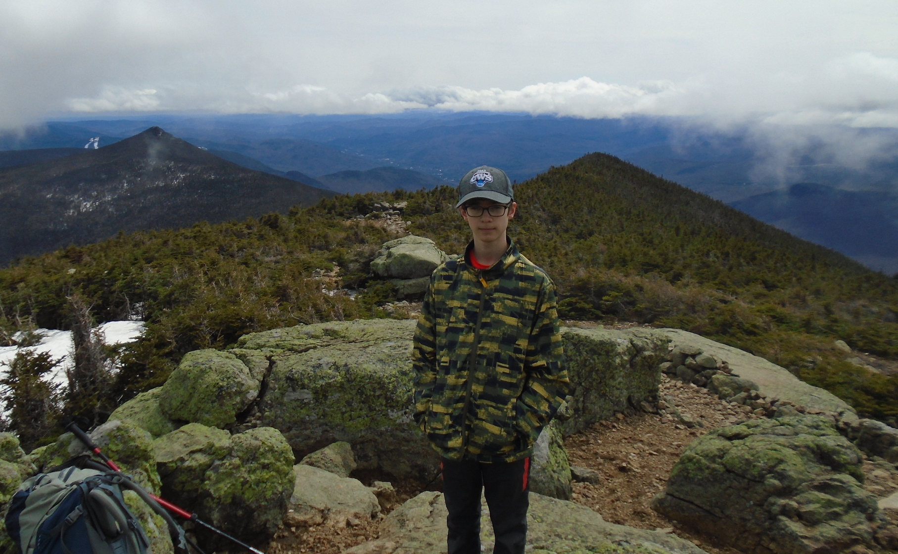
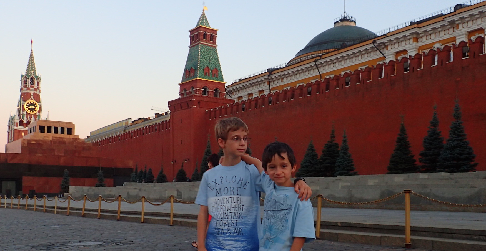
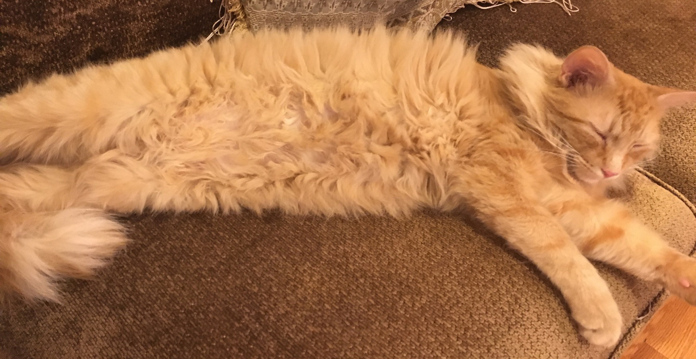

Hello, I’m Daniel Kaminski, and thank you for visiting my website! I’m currently a junior at Mass Academy and in my spare time I enjoy weightlifting, hiking, playing video games and hanging out with my friends. I also play piano, do Boy Scouts, Kung Fu, tennis, and in the past I have also participated in 5 years of competitive gymnastics. The past two years I have had the privilege of going to my school science fair, regional fair, and even the Massachusetts Fair, in which I placed third last year! These have been great experiences and have exposed me to the world of competitive science. Throughout my life I have also gotten the opportunity to see some parts of the world and I have gone to Canada, Russia, Mexico, and the Dominican Republic. Now that you have learned a little bit about me, have fun exploring my website!
One of my favorite activities is hiking, camping, and exploring nature in general. A group that allows me to really get involved with nature and experience its beauty is the Boy Scouts program and specifically my group, Troop 182. Throughout the years I have participated in many hiking and camping adventures with this group. This ranges from a High Adventure trip to the Boundary Waters in Minnesota, to a simple sunset hike up Mount Wachusett, but each is memorable in its own way. One of my favorites is always the yearly mountain hike. The feeling when you summit the mountain and can see the beautiful view is indescribable, and I would recommend anyone to try hiking a mountain at some point in their life. Through scouts I have also learned to be respectful to nature, and to always “leave no trace”. Overall, the friends, experiences, and the fun times this program has provided me have been of infinite value.
I started piano when I was 5 and have not looked back since. Throughout the years I have gone from playing basic notes to full-length classical pieces. Thanks to my piano teacher I have learned many skills, including musical expression and sight-reading. Although I’m always nervous before my recitals, they're always a good time, and it’s a blast listening to other people’s performances of beautiful piano pieces. Piano has also taught me patience and persistence. Additionally, all throughout middle school and my first two years of highschool I played the clarinet. This provided me with the ability to play music as part of a band group, and taught me many important collaborative skills. Over time I have learned more and more about the world of music, and of course, I enjoy my fair share of listening to music as well.
Although I no longer do gymnastics, I did compete for 5 years. Each competitive meet was nerve-wracking, but every time I got to up to the podium and saluted the crowd made it all worth it. I had a great time going to Sterling Gym with my friends, and the huge amount of new skills that were there to learn made it a continuous challenge. Throughout my time doing gymnastics I learned so much about the community and had a great time interacting with others. After I stopped doing gymnastics I ended up picking up Kung Fu. I have moved up all the way to a purple with blue belt after attending the Kung Fu and Tai Chi Academy of New England for now over 2 and a half years. This has been a great learning experience and has taught me discipline and the meaning of Kung Fu and other martial Arts. I have also occasionally played tennis in my free time as well as spending considerable time over the past two years weight lifting.
I live in Holden with my younger brother, mother, father, and cat Apricot. My paternal grandparents live in Holden as well, while my maternal grandma, aunt, and cousin live in Moscow, and below is an image of me and my brother when we visited them there. I also have an older brother that serves in the military and as such doesn't stay in same place for too long. My cat Apricot is a very cute Maine Coon cat, and he is very small and is only 1 year old. He has a unique talkativeness and he also likes taking walks outside.
 